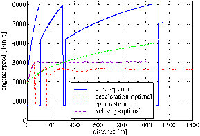
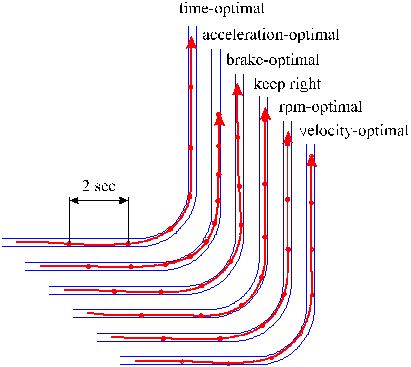
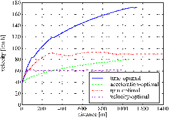
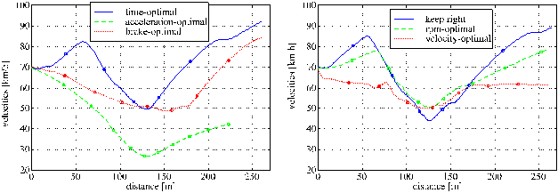

Modeling human vehicle driving - an optimization approach
Dr.-Ing. Günther Prokop
1 Research objective
When driving a vehicle, the driver acts
as a controller of a dynamic plant. Modern driver support systems have
a strong influence on the vehicle's dynamic behavior, in order to help
the driver stabilize the car, particularly in critical situations.
To help assess the impact of such systems on the overall safety, realistic
driver models are indispensable. Furthermore, tremendous progresses
in computer technology and in the theory of optimization and
control enable us to describe human behavior in the loop ever realistically.
Consequently, the aim of the research
is to develop a driver model, which relates the driver's action to his
perception, driving experience, and preferences over a wide range of possible
traffic situations. An enhanced understanding of driver behavior
in the dynamic control loop can as well give major contributions to the
design of driver support systems within the California PATH program.
2 Concept
As a starting point, three basic assumptions
are made concerning human behavior, which are deduced from every day's
experience:
The human uses his sensory perception
to estimate the current state of motion of his vehicle. (perception)
With rising driving experience the human
can learn intuitively the dynamic behavior of his vehicle ever more precisely.
(prediction)
Given that the human is able to predict
the behavior of the plant to be controlled, he will at every time instance
optimize his behavior with respect to criteria chosen by himself. (optimization)
Based on already known concepts the
driver is modelled as a three-stage controller, in the core of which there
is an optimization problem, which is solved at every time instance:
The "cognitive decision layer" is constituted
by a fuzzy decision chain, in which the driver deliberately determines
his optimization criteria (speed, comfort, emergency, etc.), boundary
values for the constraints, and - depending on the driving experience -
the accuracy of the prediction model used. In the "planning layer", these
quantities are used to formulate an optimization problem, the solution
of which is an optimized course of driver inputs (accelerator pedal, steering
angle, braking force, gear sequence) over the predicted period. In the
"stabilization layer" these input signals are again corrected at a higher
sampling rate to meet the predicted vehicle trajectory.
Effects such as learning, imperfect perception,
and fatigue are conceptionally included.
3 Simulation results
In undisturbed driving our model was
able to predict behavioral patterns, which are commonly known by every
driver: braking before curves with sensible gear sequences. Cornering at
the line of minimal curvature, if sight distance and traffic situation
allow it. The driver starts accelerating again at the vertex of the curve.

Fig. 2: Engine speed during undisturbed acceleration
for various preferences
Fig.
3: Trajectories for different preferences during undisturbed cornering
Undisturbed driving: straight road
Fig.
1: Velocity profiles for undisturbed acceleration for various preferences
Undisturbed driving on a straight road reflects mainly the driver's
behavior in longitudinal control. Figs. 1 and 2 show velocity and engine
speed of a manually shifted vehicle under various preferences.
In the "time-optimal" case the driver tries to do as long a distance as
possible per time. The model reflects this by accelerating with a fully
open throttle and gear shifts only, if the engine's maximal engine
speed is reached, so that its maximal power is applied. The "acceleration-optimal"
behavior tries mainly to minimize accelerations on the passengers
with a small weight imposed on time optimality. The result is a very smooth
acceleration, reaching only 80 km/h after a distance of 1000 m. In the
"rpm-optimal" case an engine speed of 2500 rpm should be maintained, whereas
the "velocity-optimal" driver wants to maintain a speed of 60 km/h.
Undisturbed driving: 90° cornering
In Fig. 3 various vehicle trajectories
are shown for cornering at 90° using different preferences.
Most of the trajectories are close to the curve of smallest curvature.
The trajectory corresponding to the "keep right" criterion however, stays
mostly in the middle of the right line as posted by the driver's preference
to keep his lane.

Fig. 4: Velocity profiles during undisturbed cornering
for various preferences
In the velocity diagram (Fig. 4) the "time-optimal" driver can
be seen to accelerate as fast as possible before the curve. He
brakes applying the maximal possible deceleration, so that side forces
can still be transmitted to the road. At the curve's vertex he starts accelerating
again at full-open throttle. The "acceleration-optimal" driver brakes
gently before the curve to minimize speed and thus lateral accelerations
during cornering. In the "brake-optimal" case, the driver tries to minimize
the usage of brakes to avoid unnessecary energy dissipation. He decelerates
gently at very high engine speed using the engine's haul torque. If the
driver wants to stay in his own lane ("keep right" case), the curvature
of the vehicle's trajectory is comparatively large, so that his minimum
speed is considerably lower than those of the other preferences.
The model is conceptually able to simulate more complex situations as
well, such as car following and overtaking. The simulation of "critical"
(emergency) situations and an experimental verification of the results
are planned for the near future.